Papan Pengumuman X TKJ 1
SMK Negeri 2 CilakuBelajar dengan serius untuk jam Produktif TKJ bersama Pak Rohimat, S.T. & Ibu Tutik Dariyanti, SST.
Setiap hari Jumat sebelum istirahat Sholat Jumat, seluruh siswa X TKJ 1 wajib membersihkan area kelas.
Pesan Wali Kelas
"Jangan lupa untuk membersihkan kelas dan selalu menjaga persaudaraan di X TKJ 1."
Pembinaan Wali Kelas
Setiap Senin Jam ke-1
Informasi Singkat Kelas
- Sekolah: SMKN 2 Cilaku
- Jurusan: Teknik Komputer Jaringan
- Total Jam Mapel: 10 Jam / Hari
Profil X TKJ 1 SMKN 2 Cilaku
Mengenal lebih dekat identitas dan kekompakan keluarga besar X TKJ 1 SMKDA Cilaku.
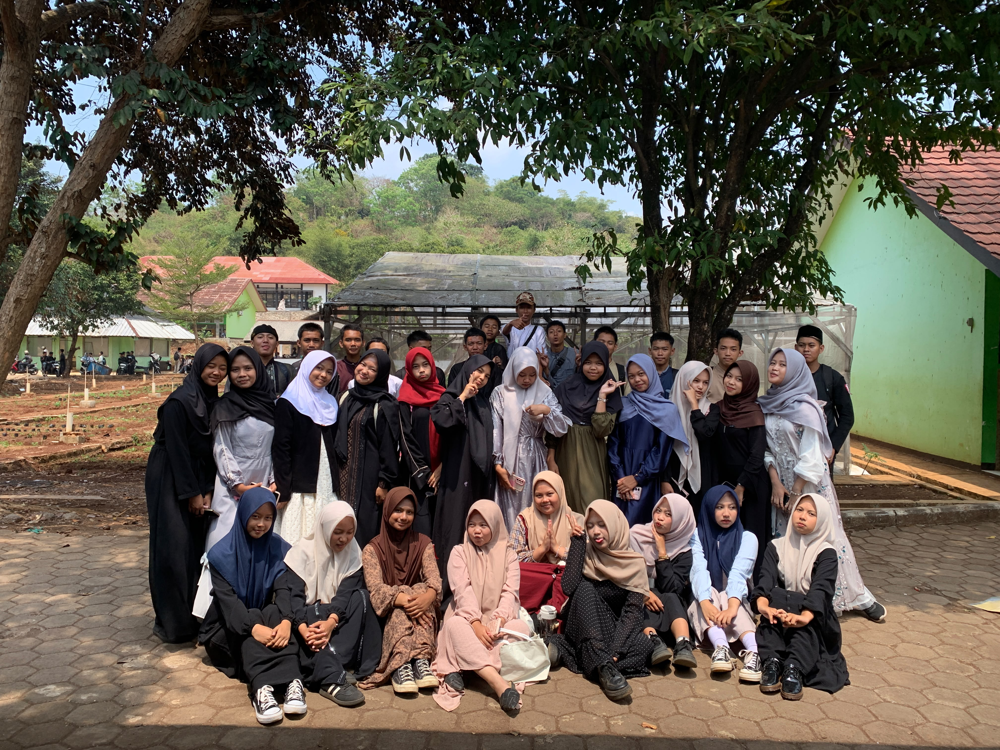
Siswa X TKJ 1 SMKN 2 Cilaku
VISI JURUSAN & KELAS
Menjadi siswa TKJ yang terampil dalam jaringan komputer, berpengetahuan luas dalam informatika, serta berkarakter akhlakul karimah.
MISI KELAS
- Disiplin hadir tepat waktu di setiap jam pelajaran & apel/upacara.
- Aktif berkolaborasi dalam tugas Produktif TKJ & Informatika.
- Menjaga kebersihan lab komputer dan ruang kelas.
- Saling menghormati sesama teman dan bapak/ibu guru.
Struktur Organisasi Kelas X TKJ 1
SMK Negeri 2 Cilaku - Tahun Ajaran Resmi
yulkhaidir al-malibary
SMK Negeri 2 Cilaku
Akhsan bardan arroyan
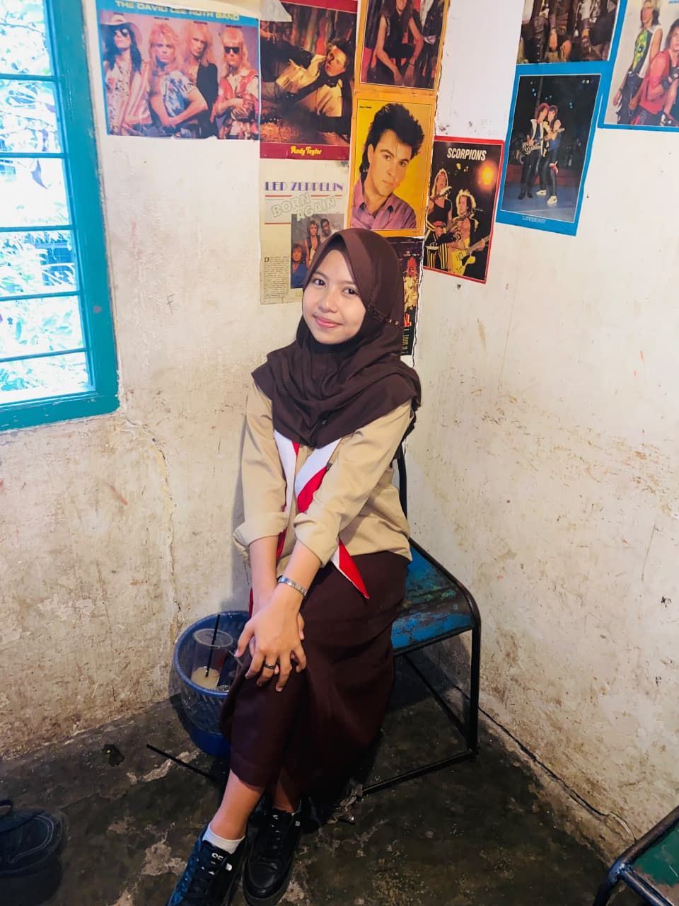
WAKIL KETUAzahra oktavia
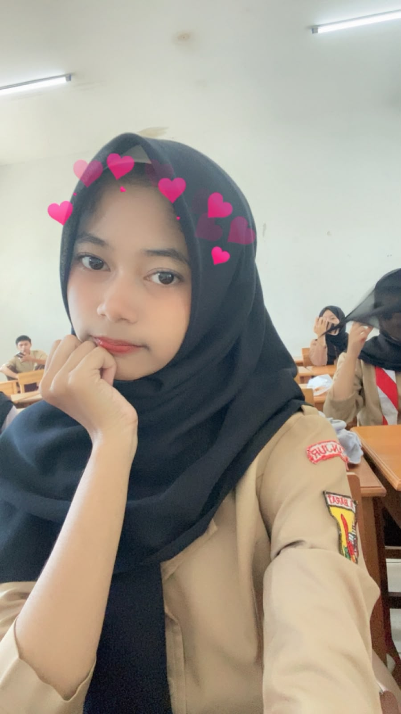
SEKERTARIS 1frilla maharani
Reni lestari
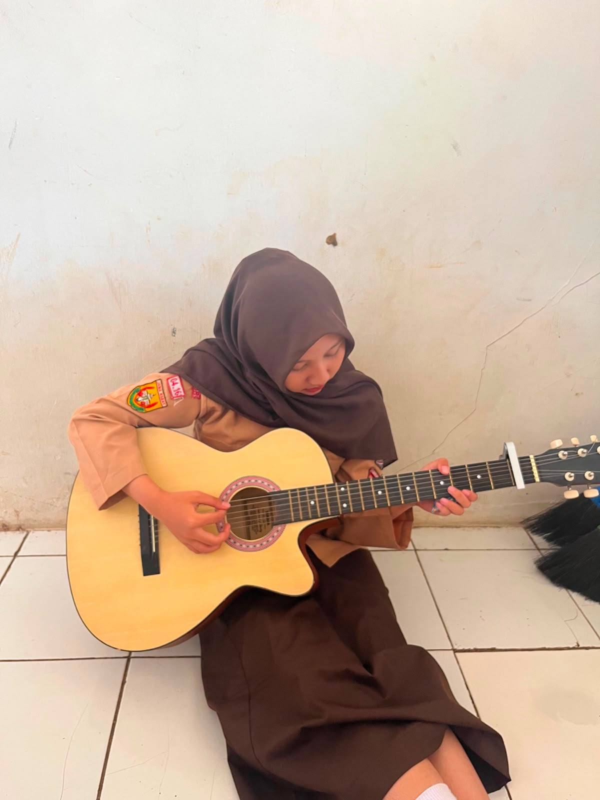
BENDAHARA 1Adelia putri ramadani
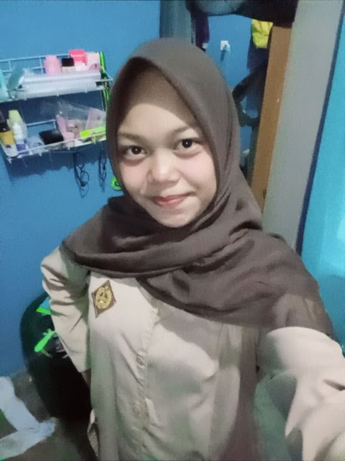
BENDAHARA 2Nazwa marlita
Member Kelas X TKJ 1
SMK Negeri 2 Cilaku - Tahun Ajaran Resmi 2026/2029
Ahmad Deedat
Deri bachdim
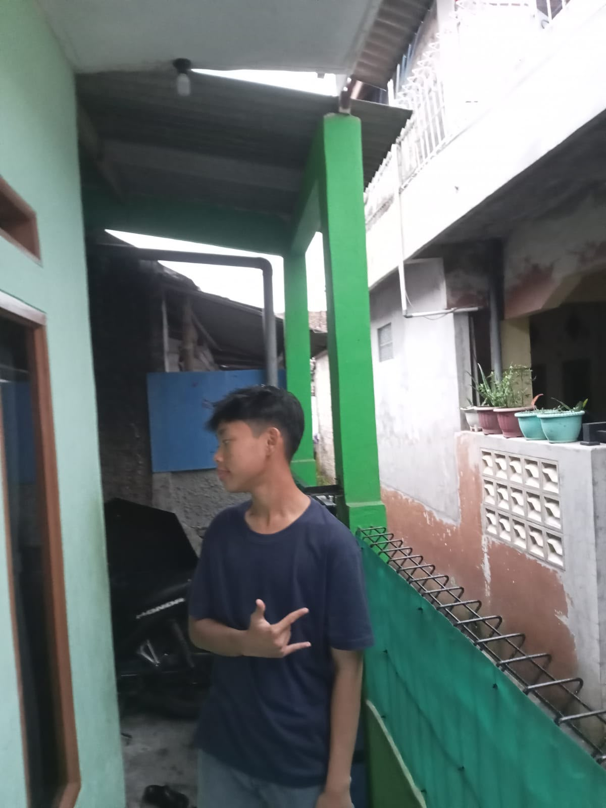
MEMBERRafi setiawan
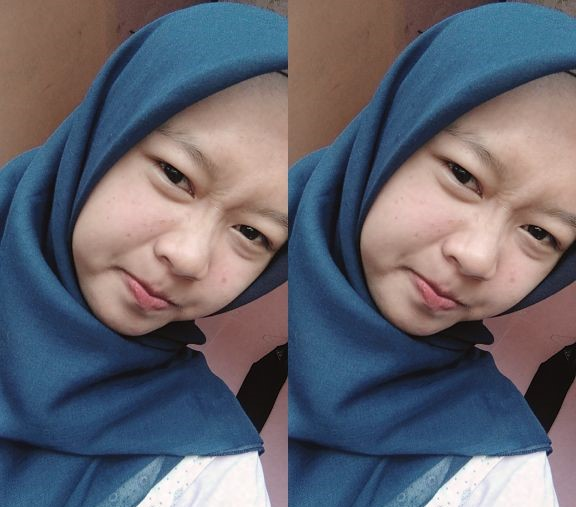
MEMBERSilvi fauziah
siti asyila
Salsa agustina
Sukaesih rahma
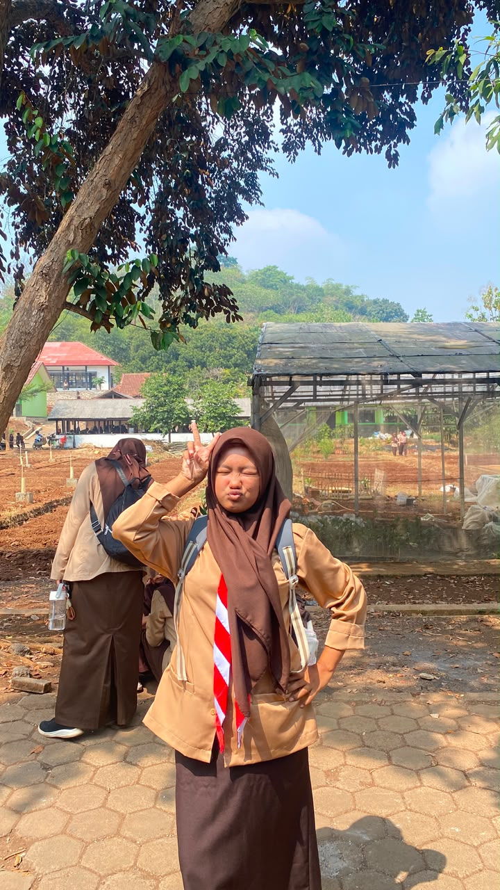
MEMBERSani napisatu nazwa
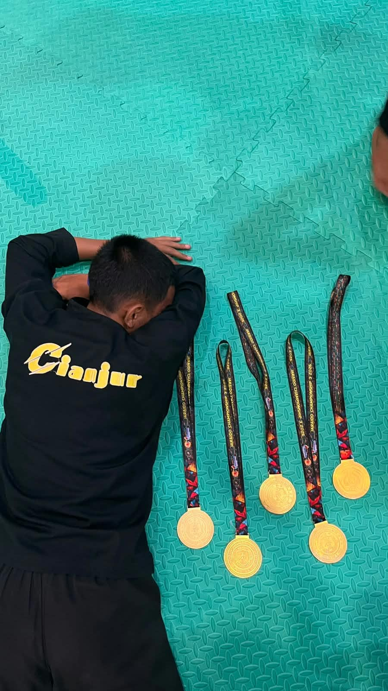
MEMBERRayhan kahfi fadilah
Putri ramadhani
Aida nurlayla
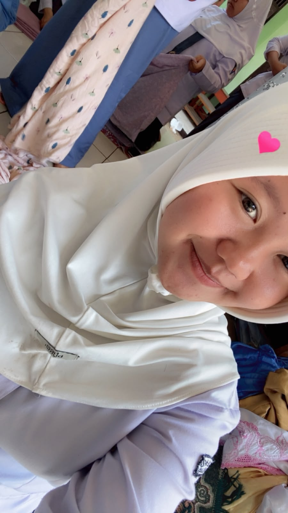
MEMBERDesta
Handayani
Selpiyana
Siti padilah
Ramzi permana
afifanur
Bunga chairunnisa
M razka al aziz
lizia sahla nur hamidah
Erga fahreza
M zulfikar renaldy
M razka al aziz
Ramzi permana
M kevin muzaqi
tasya diva rivianti
Rafa Nurrohmatulloh Atmaja
Septian catur prasetya
M FAKHRI ZAIDAN
JADWAL PELAJARAN RESMI X TKJ 1
SMK Negeri 2 Cilaku (SMKDA) Timetables
| HARI | Jam 0 06:30-07:10 |
Jam 1 07:10-07:50 |
Jam 2 07:50-08:30 |
Jam 3 08:30-09:10 |
Jam 4 09:10-09:50 |
ISTIRAHAT 1 09:50-10:20 |
Jam 5 10:20-11:00 |
Jam 6 11:00-11:40 |
ISTIRAHAT 2 11:40-12:20 |
Jam 7 12:20-13:00 |
Jam 8 13:00-13:40 |
Jam 9 13:40-14:20 |
Jam 10 14:20-15:00 |
|---|---|---|---|---|---|---|---|---|---|---|---|---|---|
| SENIN | Upacara | Pembinaan Wali Kelas | Seni Budaya Dean Angga P, S.Sn | B. Inggris Heni Nurhaeni, S.Pd. | ISTIRAHAT | B. Inggris Heni Nurhaeni, S.Pd. | Informatika Siti Ade Amiati, S.Kom | ISTIRAHAT | Informatika Siti Ade Amiati, S.Kom | B. Indonesia Meti Darmiati, S.Pd., M.Pd. | |||
| SELASA | Sholat Dhuha | Matematika Yulkhaidir, S.Pd. | PJOK Azil Madarta, S.Pd | ISTIRAHAT | PJOK Azil Madarta, S.Pd | ISTIRAHAT | Produktif TKJ Rohimat, S.T. | ||||||
| RABU | Apel Pagi | Informatika Siti Ade Amiati, S.Kom | Pendidikan Pancasila Destya R, S.Pd. | ISTIRAHAT | Produktif TKJ Tutik Dariyanti, SST | ISTIRAHAT | Sejarah Indonesia Reni N, S.H | IPAS Yufi Kustiani, S.Pd | |||||
| KAMIS | Ahlakul Karimah | B. Sunda Daratul Laella, S.Pd | ISTIRAHAT | B. Inggris Heni Nurhaeni, S.Pd. | ISTIRAHAT | Informatika Siti Ade Amiati, S.Kom | Pendidikan Agama & Budi Pekerti Roni Hoeron, S.Pd | ||||||
| JUMAT | Penguatan Karakter | IPAS Yufi Kustiani, S.Pd | Produktif TKJ Tutik Dariyanti, SST | Produktif TKJ Tutik Dariyanti, SST (09:10-10:30) |
Friday Clean-Up 10:30-11:10 |
SHOLAT JUMAT 11:10-13:00 |
Projek Kokurikuler 13:00 - 15:00 (Jam 7-10) | ||||||
Piket Kebersihan Kelas X TKJ 1
Tim Piket Senin (SITI ASILA, MUHAMAD RAFI SETIAWAN, HANDAYANI,SELPIYANA, LIZIA SAHLA NUR , SANI NAPISATU , ADELIA PUTRI )
Tim Piket Selasa (MUHAMMAD ZULFIKAR, SITI PADILAH, M FAKHRI ZAIDAN, SUKAESIH RAHMA F, SILVI NURUL FAUZIAH, FRILLA MAHARANI, BUNGA CHAIRUNNISA)
Tim Piket Rabu (ERGA FAHREZA , NAZWA MARLITA, SALSA AGUSTINA R, M RAZKA AL AZIZ, AFIFA NUR, MOH KEVIN MUZAQI, RAFA NURROHMATULLAH)
Tim Piket Kamis (PUTRI RAHMADANI, AKHSAN BARDAN , SITI NURLAELA, RAYHAN KAHFI , AHMAD DEEDAT, RENY LESTARI , RAMZY PERMANA)
Tim Piket Jumat (DERI BACHDIM, AIDA NURLAILAH, TASYA DIVA RIVIASTI, ZAHRA OKTAPIA, DESTA, SEPTIAN CATUR, AFRIANSAH)
Album Foto X TKJ 1
Dokumentasi kenangan, dan kebersamaan di SMKN 2 Cilaku
Perayaan Hari SANTRI
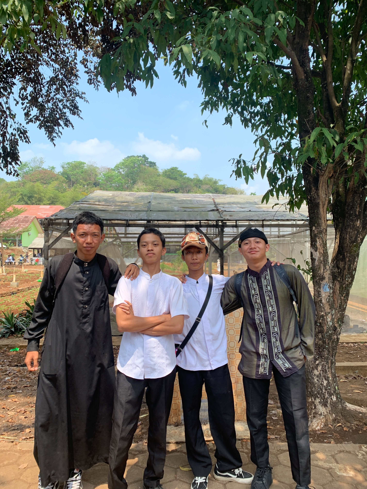
Hari Santri SMKDA
Istirahat Bersama di Kantin
Pelajaran Produktif & Informatika
Jam Olahraga / PJOK
Friday Clean-Up Bersama